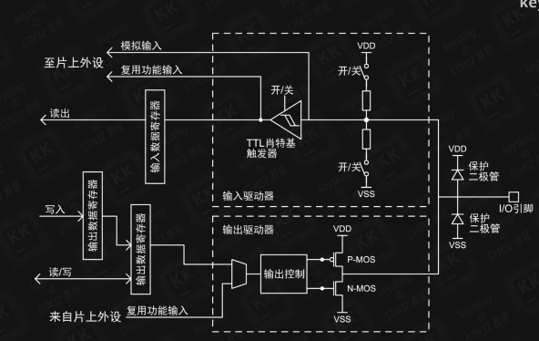
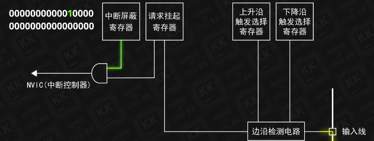
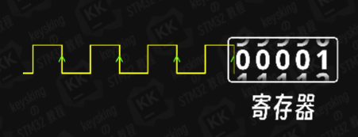
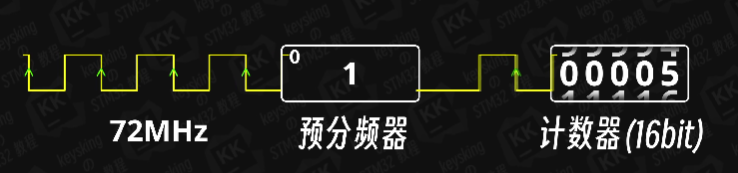
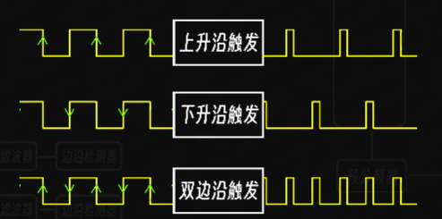
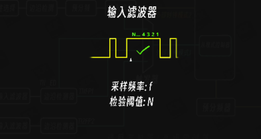

GPIO
GPIO配置是通过结构体
1 | uint32_t GPIO_Pin; |
引脚操作
1 | GPIO_ReadInputDataBit(GPIOF,GPIO_Pin_7) //读取PF7引脚高低 |
通过不同配置实现引脚的不同功能

上面的框的开关选择决定了上拉输出和下拉输出
下面决定了推挽和开漏，开漏模式（选用5V容忍的引脚）下只有N-MOS在工作，P-MOS断开，此时电路无驱动能力。推挽是由芯片内部电压所驱动的。
复用推挽/开漏输出是指将GPIO（通用输入输出）引脚用作特定外设功能，同时保持推挽/开漏输出的特性。
EXTI
输入线与上图的至片上外设相连接

需要实现中断，经过一个与门，软件上的是中断配置，硬件上边沿的到来，边沿会使对应位的置高电平，中断完成后需要把那一位的高电平置0。
1~4单独有，5~9公用一条中断线，10~15公用一条中断线，要做好区分。
TIM
103有以下定时器
高级定时器:TIM1、TIM8
功能：拥有通用定时器全部功能，并额外具有重复计数器、死区生成、互补输出、刹车输入等功能
通用定时器:TIM2、TIM3、TIM4、TIM5
功能：拥有基本定时器全部功能，并额外具有内外时钟源选择、输入捕获、输出比较、编码器接口、主从触发模式等功能
基本定时器:TIM6、TIM7
功能：拥有定时中断、主模式触发DAC的功能
定时器用于计数，若方波频率为100Hz,寄存器数为100时，就可得知1s过去了。

但实际寄存器只有16bit=65536，对于一般情况来说往往是不够的，所以需要预分频器。

预分频器（16bit）也是一个计数器，例如设0时，就会原封不动传出去，设1时，预分频器会反复0,1，实现了2分频。
输出
PWM频率： Freq = CK_PSC / (PSC + 1) / (ARR + 1)
PWM占空比： Duty = CCR / (ARR + 1)
PWM分辨率： Reso = 1 / (ARR + 1)
舵机的控制一般需要一个20ms左右的时基脉冲，该脉冲的高电平部分一般为0.5ms-2.5ms范围，总间隔为2ms。
TIM_OCInitStructure.TIM_OCMode = TIM_OCMode_PWM1/TIM_OCMode_PWM2
TIM_OCInitStructure.TIM_OCPolarity = TIM_OCPolarity_High/TIM_OCPolarity_Low
一个为PWM输出模式，另一个为高/低电平有效，更改其中后的实际效果为产生原来互补的波形
例如TIM1输出PWM波
1 | void TIM1_Config(uint16_t arr,uint16_t psc) |
输入捕获
输入捕获模式下，当通道输入引脚出现指定电平跳变时，当前CNT的值将被锁存到CCR中，可用于测量PWM波形的频率、占空比、脉冲间隔、电平持续时间等参数。
配合定时器进行计数，实现对转速的测量。
每个定时器具有编码器接口，进行对正反转以及转速的测量,一般为通道1和2.

输入滤波器，经过n次检验仍为高电平，为有效，f和N的值在手册中可查到对应。
1 | TIM_ICInitStructure.TIM_ICFilter = 0xF; //输入滤波器参数，可以过滤信号抖动 |

1 | void Encoder_Init(void) |
USART
USART（Universal Synchronous/Asynchronous Receiver/Transmitter）通用同步/异步收发器,32上部分串口位UART，只有异步功能
实际并未规定电平标准，电平转换是很有必要的，否则或导致损坏
TTL电平：+3.3V或+5V表示1，0V表示0
RS232电平：-3~-15V表示1，+3~+15V表示0
RS485电平：两线压差+2~+6V表示1，-2~-6V表示0（差分信号）RS485一般为半双工通讯，要么接受要么发送
一组数据发送：起始位（低电平）+数据帧+奇偶校验位(可选)+停止位
接收每一数据，要等其前一个数据接收完毕，发送数据要等前一个数据发送完毕，否则会导致数据丢失。
发送数据要缓点，否则接收设备一直会处在串口中断，导致程序卡死
1 | typedef struct |
ADC&&DAC
ADC（Analog-Digital Converter）模拟-数字转换器，ADC可以将引脚上连续变化的模拟电压转换为内存中存储的数字变量，建立模拟电路到数字电路的桥梁12位逐次逼近型ADC，1us转换时间输入电压范围：0~3.3V，转换结果范围：0~409518个输入通道，可测量16个外部和2个内部信号源规则组和注入组两个转换单元模拟看门狗自动监测输入电压范围
AD转换的步骤：采样，保持，量化，编码。
根据香农采样定理，为了不失真地恢复信号，采样频率要超过模拟信号最高频率的两倍。
打开ADC配置的结构体部分
1 | typedef struct |
IIC
I2C（Inter IC Bus）是由Philips公司开发的一种通用数据总线
特点:1.两根通信线：SCL（Serial Clock）、SDA（Serial Data）2.同步，半双工3.带数据应答支持5.总线挂载多设备（一主多从、多主多从）
发送应答：主机在接收完一个字节之后，在下一个时钟发送一位数据，数据0表示应答，数据1表示非应答
接收应答：主机在发送完一个字节之后，在下一个时钟接收一位数据，判断从机是否应答，数据0表示应答，数据1表示非应答（主机在接收之前，需要释放SDA）
SPI
SPI（Serial Peripheral Interface）是由Motorola公司开发的一种通用数据总线四根通信线：SCK（Serial Clock）、MOSI（Master Output Slave Input）、MISO（Master Input Slave Output）、SS（Slave Select）同步，全双工支持总线挂载多设备（一主多从）
时序基本单元：
起始（1）+操作+地址+数据
起始条件：SS从高电平切换到低电平终止条件：SS从低电平切换到高电平
交换一个字节（模式0）CPOL=0：空闲状态时，SCK为低电平CPHA=0：SCK第一个边沿移入数据，第二个边沿移出数据
交换一个字节（模式1）CPOL=0：空闲状态时，SCK为低电平CPHA=1：SCK第一个边沿移出数据，第二个边沿移入数据
交换一个字节（模式2）CPOL=1：空闲状态时，SCK为高电平CPHA=0：SCK第一个边沿移入数据，第二个边沿移出数据
交换一个字节（模式3）CPOL=1：空闲状态时，SCK为高电平CPHA=1：SCK第一个边沿移出数据，第二个边沿移入数据
LVGL移植
突出一个烦，其实没什么难度，首先将LVGL的仓库从git上拉下来，驱动和图形界面是分开的，可以拿取网上移植好的部分放入自己的工程，不会有路径报错的问题。实际需要移植的src文件中的全部，examples中是例子，按需移植就行。
1.有一份能够正常显示LCD屏的代码，然后移植文件，将.c文件添加，.h文件加入编译路径（别管有没有用，一股脑全加），将一些头文件如”../lvgl.h”改为”lvgl.h”，使能文件，修改if 0 改为if 1，
2.根据自己的lcd屏的实际情况更改修改参数，横宽，色位，将一些画屏函数添加到LVGL中的对应函数中，主要是更改port里的函数，进行补充。
3.1ms的定时器中断，lvgl处理中断
1 | lv_tick_inc(1);//裸机将该函数放入中断服务函数中 |
4.修改栈空间，不足会导致无法显示，103位于startup_stm32f10x.s中，407差不多也是，然后修改Stack_Size
6.main函数扔进去相关函数，进行初始化，运行
1 | //只有lvgl初始化部分 |
低功耗
利用DMA，搬数据时cpu睡着，差不多再醒来。